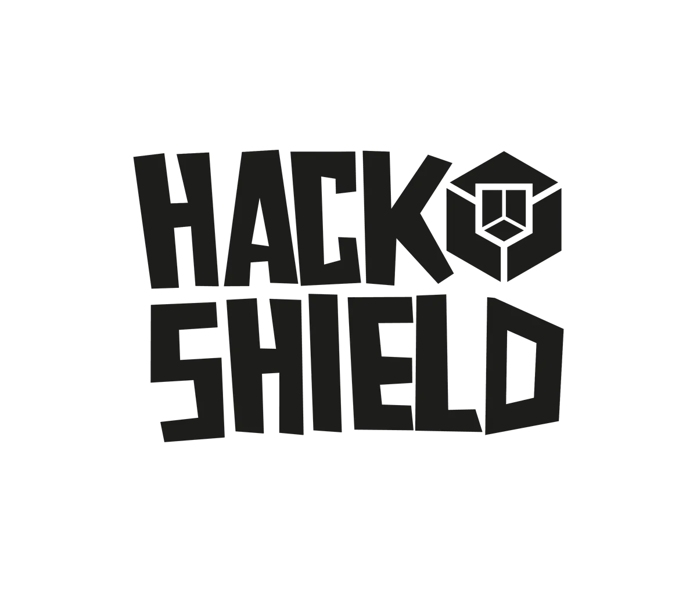

Nieuws ·
Gemeente Nijmegen zoekt kinderen die Cyber Agent willen worden

“Worden jullie onze nieuwe Cyber Agents?” Deze oproep doen de gemeente Nijmegen en de politie deze week aan alle kinderen tussen 8 en 12 jaar. Door de game HackShield te spelen leren kinderen over internetcriminaliteit. De gemeente hoopt dat ieder kind dit leerzame spel gaat spelen. De beste Cyber Agent wordt voor de zomervakantie door de burgemeester gehuldigd in de bibliotheek. Dinsdag 2 april is de officiële kick-off van Hackshield.
Kinderen zijn zich niet altijd bewust zijn van de gevaren die ze online lopen. Ze zijn daardoor een makkelijke prooi voor hackers en andere online criminelen. Door de online game HackShield te spelen, leren ze hoe je op internet risico’s kunt herkennen. En wat je kunt doen om te voorkomen dat je slachtoffer van cybercriminaliteit wordt.
Burgemeester Bruls: “Kinderen kunnen de komende tijd met het gratis online spel Hackshield digitale boeven leren vangen. Zo worden ze weerbaar tegen digitale criminaliteit. Ik roep alle kinderen uit Nijmegen op: speel de game en word onze nieuwe Cyber Agent. Het mooiste is als je dan ook aan je familie vertelt wat je geleerd hebt. Zo help je mee om Nijmegen online veiliger te maken!”
Door het spel te spelen, kunnen kinderen ook een prijs winnen. Voor de zomervakantie vindt een huldiging van de Cyber Agent met de meeste punten plaats door de politie en burgemeester Bruls in Bibliotheek Mariënburg in de binnenstad.
Gezamenlijke campagne om Cyber Agent te worden
Voor dit project heeft de gemeente het online pakket HackShield aangekocht, dat ook door andere gemeenten succesvol wordt ingezet. Om zoveel mogelijk kinderen te laten deelnemen, werkt de gemeente de komende tijd samen met de Nijmeegse politie, Bibliotheek Gelderland Zuid, welzijnsorganisatie Bindkracht10 en scholen voor basisonderwijs in de stad. Scholen zullen bijvoorbeeld de online game op school en bij de ouders onder de aandacht brengen. De politie vraagt op 2 april ook aandacht voor digitale veiligheid in de binnenstad. De gemeente Nijmegen sluit daarbij aan en lanceert deze campagne.
Ouders kunnen hun kind op gang helpen
Heeft u ouders van kinderen in de leeftijd van 8 tot 12 jaar? We snappen dat u niet altijd blij bent als kinderen veel gamen op hun computer of iPad. Maar deze game is écht leerzaam. Help uw kind daarom het spel downloaden en log mee in. Misschien kunt u tijdens het spelen meekijken en achteraf eens vragen wat uw kind geleerd heeft? Waarschijnlijk steekt u er zelf ook iets van op.
Meer informatie
Het spel en de oproepvideo met burgemeester Bruls is te vinden op de gemeentepagina van Hackshield.